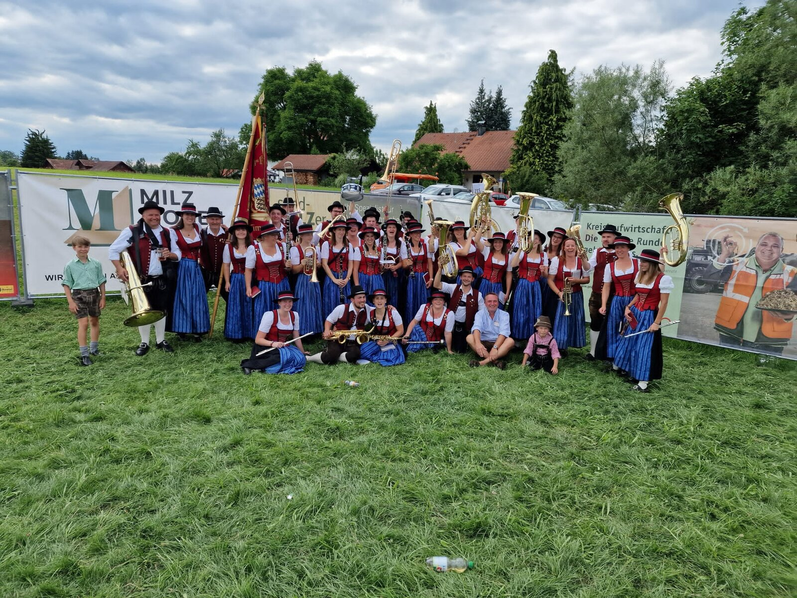
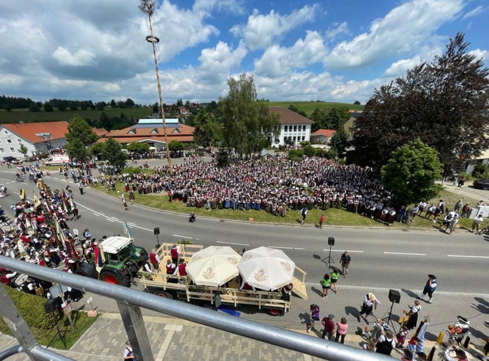

Was wir spielen
Blasmusik von traditionell bis modern – je nach Anlass.
- Märsche & Polkas
- Konzertante Blasmusik
- Moderne Arrangements
Verein
Gemeinschaft, musikalische Qualität und lebendige Tradition.

Die Musikkapelle
Eine Musikkapelle mit Freude an traditioneller und moderner Blasmusik – im Dorfleben genauso wie auf Festen. Unser Verein vereint Jung und Alt in der gemeinsamen Leidenschaft für Blasmusik.
Blasmusik von traditionell bis modern – je nach Anlass.
Wir proben regelmäßig und unterstützen Neueinsteiger.
